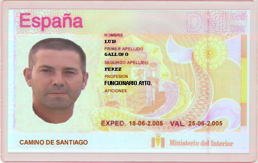
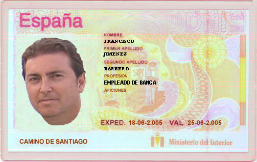
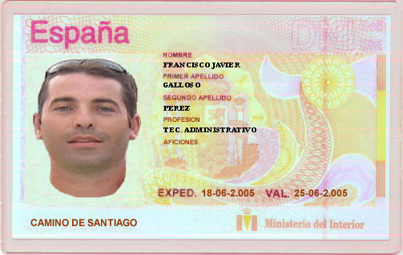
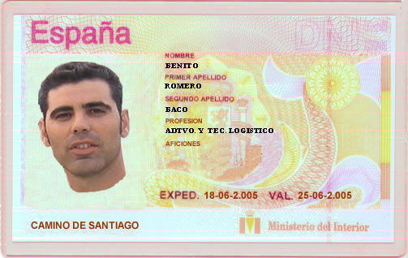
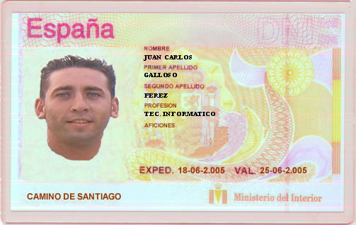

|
|||
 |
 |
||
|
|||
|
|||
|
|
||
|
|||
AQUÍ LOS PROTAGONISTAS




ANTE LA PROPUESTA DE ORGANIZAR UN PEREGRINAJE POR EL CAMINO DE SANTIAGO, ESTUVIMOS PENSÁNDOLO DURANTE UN TIEMPO PERO NO DABAMOS CON UNA FECHA ADECUADA, SE TENÍAN COMPROMISOS Y SIEMPRE SE LE DABA LARGAS AL ASUNTO, INTENTAMOS EN UN PRIMER LUGAR COGER LA SEMANA DEL 11 AL 18 DE JUNIO TENIENDO EN CUENTA QUE SI SEVILLA O BETIS PASABAN A LA FINAL DE LA COPA DEL REY DEL DIA 12 DE JUNIO TENDRÍAMOS QUE COGER LA SIGUIENTE SEMANA (AUNQUE EXISTÍA UN COMPROMISO IMPORTANTE DE UNO DE NOSOTROS QUE NO TENÍA CONFIRMADO TODAVIA). LA COSA PARECÍA COMPLICADA PERO NOS DECIDIMOS FINALMENTE
EL BETIS FUE PASANDO ELIMINATORIAS Y SE ENCAJA EN LA FINAL, ESTO NOS HIZO ESPERAR HASTA ULTIMA HORA PARA ORGANIZAR TODO EL TEMA.
EN UN PRINCIPIO LA IDEA AL TENER DISPONIBLES SOLO CINCO O SEIS DIAS ERA SALIR DESDE TRIASCASTELA.
(PERSONALMENTE PENSÉ EN SALIR DESDE VILLAFRANCA DEL BIERZO, HACIENDO PREVIAMENTE NOCHE EN PONFERRADA) SALIENDO UN DÍA ANTES Y SACRIFICANDO UN DÍA MENOS EN SANTIAGO.
CONSULTADO EL TEMA, SE PREFIERE ESTAR MEJOR DOS DIAS EN SANTIAGO Y TENER ALGUN DIA DE RESERVA POR SI ACASO.
RECOPILANDO INFORMACION A TRAVÉS DE INTERNET, SE PREPARÓ UN DOSSIER CON LAS ETAPAS QUE SE TENÍAN PREVISTAS, INFORMACIÓN DE TODO TIPO, OROGRAFÍA DE ETAPAS, SUS KM., MONUMENTOS A VISITAR DE CADA LOCALIDAD, SUS ALBERGUES ETC. ETC.
Y DECIDIMOS REPARTIRNOS LAS TAREAS DE ORGANIZACIÓN, MIENTRAS UNOS BUSCABAN ALGUN VUELO ECONÓMICO (Cosa que ya a última hora fue imposible), OTROS ORGANIZABAN EL TRAYECTO DE IDA COMO EL TRANSPORTE Y HOSPEDAJE Y OTROS EL HOSPEDAJE UNA VEZ SE LLEGARA A SANTIAGO.
CONSULTANDO EL TEMA DEL TRANSPORTE Y VIENDO LA COMBINACIÓN TAN MALA PARA LLEGAR A TRIACASTELA COMO PUNTO DE PARTIDA, CAMBIAMOS LOS PLANES Y DECIDIMOS LLEGAR HASTA LUGO PARA PASAR EL DIA COMPLETO Y VISITARLO Y A LA MAÑANA SIGUIENTE DIRIGIRNOS HASTA SARRIA COMO PUNTO DE PARTIDA DEL PEREGRINAJE.
EL TEMA QUEDABA VISTO PARA SENTENCIA (TODOS DE ACUERDO).
VENGA A COMPRAR MOCHILAS Y ACCESORIOS PARA EL CAMINO.......
QUEDAMOS A LAS 9,30 EN CERVECERIA “LOS VAZQUEZ” PARA TOMAR UNAS CERVEZAS ANTES DE DIRIGIRNOS A LA ESTACIÓN PLAZA DE ARMAS, DONDE SOBRE LAS 23:00 H. NOS MONTAMOS EN UN AUTOCAR QUE CUBRÍA EL TRAYECTO DE ALGECIRAS HASTA FERROL, NUESTRO DESTINO ERA LUGO. DURANTE ESTE VIAJE PARAMOS EN VARIAS LOCALIDADES, EL VIAJE FUE PESADÍSIMO (12 H.)
DIA 19 DE JUNIO/2.005 (llegada a Lugo)
YA DESDE EL MISMO AUTOCAR VIMOS EL HOTEL Y UN POCO MáS ADELANTE NOS DEJÓ EN LA ESTACIÓN QUE ESTABA CERCA. COGIMOS NUESTRAS MOCHILAS Y MIRAMOS LAS POSIBLES SALIDAS DE AUTOBUSES HASTA SARRIA PARA EL DIA SIGUIENTE.
VIMOS QUE EL PRIMERO ERA A LAS 6:45 el 2ª A LAS 8,05 Y EL TERCERO SOBRE LAS 8,30, NOS DECIDIMOS POR COGER EL DE LAS 8,05 POR AQUELLO DEL TERMINO MEDIO.
NOS DIRIGIMOS ANDANDO HASTA EL HOTEL

LA TEMPERATURA EN LUGO ES IDEAL, NOS PRESENTAMOS EN RECEPCIÓN CON NUESTRO RESGUARDO DE LA RESERVA CON UN POCO DE INCERTIDUMBRE YA QUE LO QUE COSTÓ (132,08.- €) UNA HABITACIÓN TRIPLE Y OTRA DOBLE EN UN HOTEL DE 4*, HACÍA DUDAR POR SI TE LA METÍAN POR OTRO LADO O VETE TU A SABER SI HABIA ALGUN ERROR, ESTÁ TODO BIEN, NOS ASIGNAN NUESTRAS HABITACIONES Y ORGANIZAMOS NUESTRO EQUIPAJE, LO PRIMERO FUÉ PENSAR QUE PELOTAZO LO DEL HOTEL Y LO SEGUNDO DARNOS UNA DUCHA QUE NOS DEJÓ COMO NUEVOS TRAS EL PESADO VIAJE.
(DE MOMENTO VA TODO PERFECTO, LA COSA EMPIEZA BIEN).

QUEDAMOS SOBRE LA 13:00 Y NOS HICIMOS NUESTRAS PRIMERAS FOTOS POR LUGO

Y POCO A POCO OBSERVAMOS QUE ÉSTA CIUDAD PARECÍA DESHABITADA, NOS DIRIJIMOS AL CASCO ANTIGUO DONDE HICIMOS UN RECORRIDO POR SUS BARES, EN LOS CUALES NOS OFRECÍAN UNOS PINCHOS POR CADA BEBIDA QUE SE PEDÍA, PROBAMOS LA SIDRA TIRADA DE BARRIL, ENTABLAMOS CONVERSACIÓN CON LOS LUGAREÑOS, SOBRE TODO DE FÚTBOL, TEMA CAPARRÓS COMO ENTRENADOR DEL DPTVO. DE LA CORUÑA, ETC., LA MAYORÍA DE BARES OFRECÍAN DEGUSTACIONES DE DIVERSOS LICORES, COSA QUE APROVECHAMOS GUSTASOMENTE.

UNA VEZ NOS DIMOS CUENTA DE LOS MOFLETES ROJOS QUE LLEVÁBAMOS (Cosa de la Sidra) y de NUESTRA euforia (Cosa de Alcohol), NOS VOLVIMOS AL HOTEL A PEGARNOS UNA PEDAZO DE SIESTA,
IMAGINARSE COMO NOS PUSIMOS QUE EL QUE LES ESCRIBE, QUEDÓ ATÓNITO ANTE LA ESTAMPA QUE VIÓ, ABRO LOS OJOS Y VEO A MIS DOS HERMANOS EN UNA MISMA CAMA CON EL CALOR QUE ESTABA HACIENDO, LA OTRA CAMA VACIA; ME REFRIEGO LOS OJOS Y SIGO VIENDO LO MISMO, ME QUEDO UN RATO PENSANDO EL PORQUÉ, Y NO ENCUENTRO EXPLICACIÓN Y NO AGUANTO MÁS Y EMPIEZO A REIRME, COSA QUE DESPERTÓ A UNO DE ELLOS QUE LEVANTA LA CABEZA Y YO QUE MAS ME REÍA, EMPIEZA A MIRAR PARA TODOS LOS LADOS Y SE DA CUENTA DE LA SITUACIÓN Y ME IMAGINO LO QUE SE LE PASÓ POR LA CABEZA, COMO HA LLEGADO ÉSTE AQUÍ, QUE HACE AQUÍ EN MI CAMA, EN FIN DE PELÍCULA LA EXPRESIÓN DE SU CARA.
(LA VERSIÓN OFICIAL DEL ASUNTO ES QUE SE LEVANTÓ AL SERVICIO E INCONSCIENTEMENTE SE EQUIVOCÓ DE CAMA)
(LAS FUENTES NO SON MUY FIABLES PERO BUENO...)
VISTO EL TEMA MIENTRAS ARREGLABAN EL ASUNTO, SALÍ A DAR UN PASEO PARA ESCRIBIR UNA CARTA, COMPRAR ALGUNAS COSILLAS PARA MERENDAR Y FRUTOS SECOS, PENSANDO EN LA PRIMERA ETAPA A RECORRER AL DÍA SIGUIENTE.
MAS TARDE VOLVIMOS A RECORRER NUMEROSOS BARES DONDE NOS PUSIMOS HASTA EL GORRO DE COMER Y BEBER.


LLEGAMOS CANSADOS AL HOTEL Y QUEDAMOS PARA EL DÍA SIGUIENTE A LAS 7,15 PARA DESAYUNAR EN BAR-CAFETERÍA EL SEVILLANO (Junto a la Estación de Autobuses) Y DESPLAZARNOS HASTA SARRIA. (LA MAÑANA SE PRESENTA GRIS), SUBIMOS CON NUESTRA MOCHILA Y RECORRIMOS LOS CASI 25 Km. QUE HABIA DE LUGO A SARRIA.
DIA 20 DE JUNIO/2.005 (Comienza el Camino desde SARRIA)

PREGUNTAMOS POR EL ALBERGUE PARA QUE NOS SELLARAN LA CREDENCIAL, COMO PUNTO DE PARTIDA DE NUESTRO PEREGRINAJE, SUBIMOS UNA GRAN CUESTA Y AL LLEGAR, NOS LO ENCONTRAMOS CERRADO ABRÍA SOBRE LAS 13 H. UNOS CARTELES INDICAN HORARIO Y TELÉFONO PARA CONSULTAR, NOS DICEN QUE VAYAMOS AL AYUNTAMIENTO, QUE ALLÍ TAMBIEN SELLABAN, MIENTRAS TANTO OTROS PEREGRINOS CONTINUABAN HACIA ARRIBA, NOS LLAMÓ LA ATENCIÓN UNA SRA. APARENTEMENTE CON UNA MOCHILA PESADA Y UNAS SANDALIAS, SUBIENDO CON MUCHO ESFUERZO LA CUESTA. ANTES DE LLEGAR AL AYUNTAMIENTO, NOS PARAMOS EN UNA TIENDA POR AQUELLO DE PREGUNTAR POR EL BORDÓN Y LA CONCHA, TAMBIEN TENIAN LAS CREDENCIALES Y TAMBIEN PUDO SELLARNOS LAS NUESTRAS.
A PARTIR DE AQUÍ PODEMOS DECIR QUE EMPEZÓ EL CAMINO,
CONTINÚA EN EL APARTADO 1ª ETAPA.
(CUALQUIER COMENTARIO SOBRE ESTA ETAPA NO DUDES EN ESCRIBIRME) PULSA SOBRE EL BUZÓN.